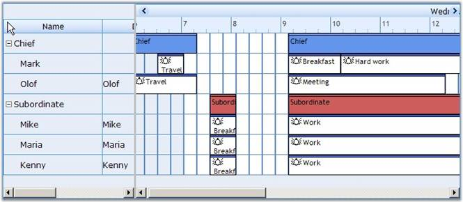
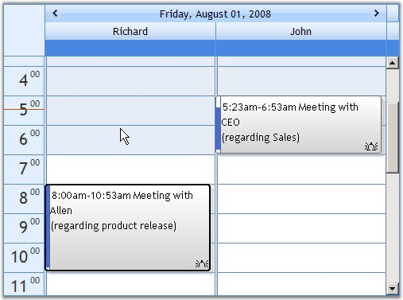
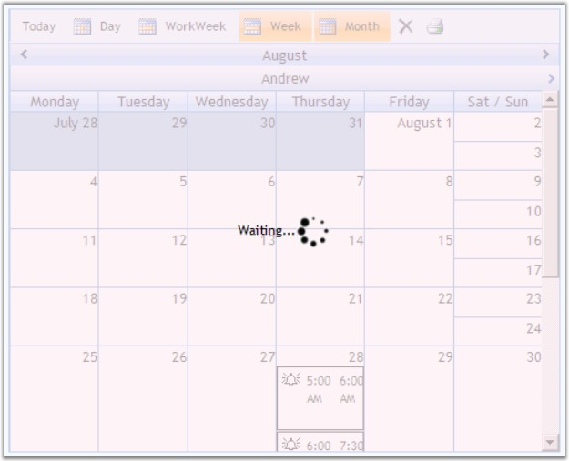
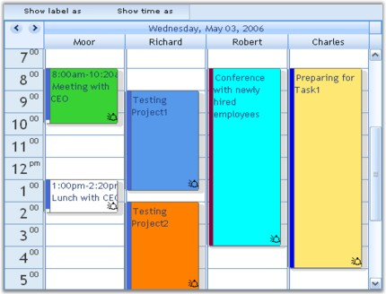
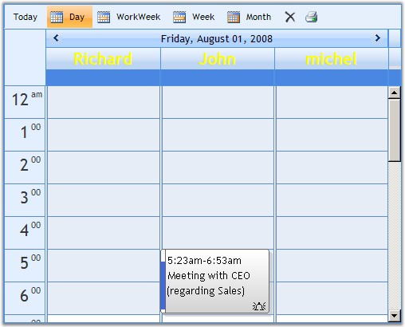
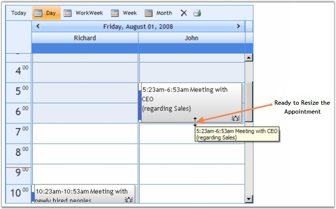
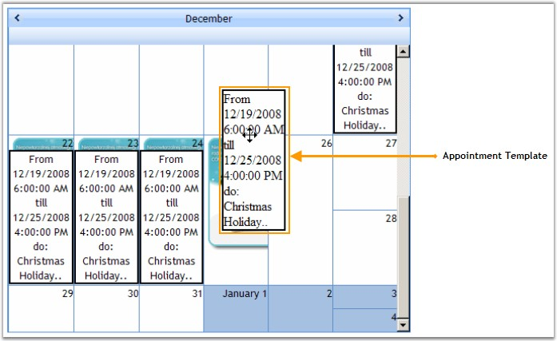
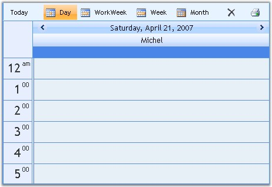
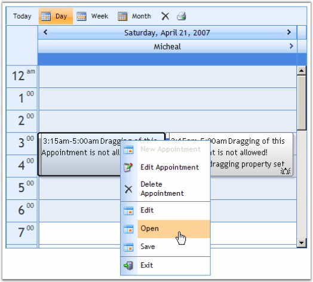
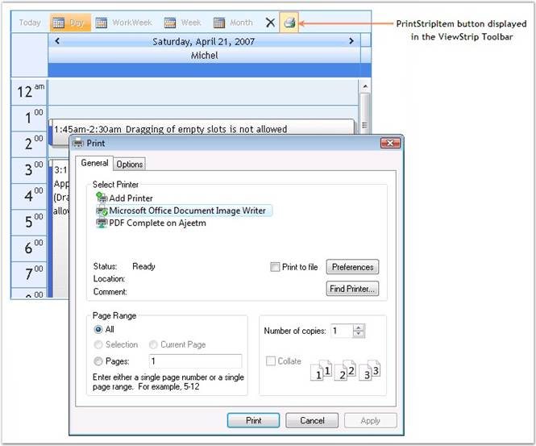

The features of the Schedule control are listed below.
· View Modes: The Schedule control supports the following view modes: Horizontal and Vertical.

Figure 11: ViewMode = "Horizontal"
· It supports viewing of multiple resources and including multiple appointments.

Figure 12: Schedule control with Multiple Resources and Appointments
· Schedule control supports rich server-side and client-side events that can be invoked to perform the required functions. By using these events, you can control the behavior of the control.
· Loading Indicator in Schedule control: The Schedule control now supports a loading indicator during callback. A transparent background and loading image are used to provide feedback about the callback process.

Figure 13: Loading Indicator in Schedule Control
· Calendar in Schedule control: Similar to the Microsoft Outlook calendar, the calendar in Schedule control allows for selecting multiple dates to view appointments. Also, it allows drag-and-drop of appointments in the calendar.

Figure 14: Schedule Calendar
· Customizing Appointments: Appointments can be added, edited, resized, dragged, blocked and recurred in the Schedule control. The duration, content, color, size, border, background color and foreground color of the appointments can also be customized according to the requirements of the user.

Figure 15: Customized Schedule Appointments
· Customizing Resources: Resources can be added and navigated in the Schedule control. The appearance of the rows and columns of the resources can also be modified.

Figure 16: Customized Schedule Resources
· Import/Export Appointments: This feature allows to import/export appointments to MS Office Outlook 2007.
· Resizing Appointments in Schedule Control: Appointment timings can be extended or changed by resizing the appointment by holding the corners of the appointment. Resizing can also be restricted to an individual appointment.

Figure 17: Appointment Resizing Illustrated
· Data Binding Support: Data Binding feature enables to bind the Schedule control with external data sources like MS Access, SQL, XML, GenericList, and so on.
· Template Support: Templates provide options to modify the appearance of each appointment: add images, extend descriptions (location, participants), static content or other controls for additional custom functionality. Each control element can be declaratively customized in terms of appearance.

Figure 18: Appointment Template
· Auto Format: The AutoFormat property can be used to change the appearance of the Schedule control. It allows you to set predefined skins for the control. Some of the available skins are Office 2007 Blue, Vista, Office 2007 Silver, Office 2007 Black, and so on.

Figure 19: Office 2007 Blue theme applied to Schedule Control
· Context Menu: This feature allows you to display menus on right-clicking the Schedule control in order to Add, Edit, or Delete an appointment. It also provides options to add custom menu items. For details, see Context Menu.

Figure 20: Context Menu displayed for the Schedule Control
· Support for Printing the Schedule Control: Schedule control provides options to print a hard copy of the Schedule appointments. The Print button in the ViewStrip toolbar activates the printing operation. When you click the Print button, a new pop-up window appears, showing the entire Schedule control along with a Print Dialog. The Print dialog allows you to enable the desired printer settings such as: selecting the printer, setting printing layout, specifying the required number of copies, and so on.

Figure 21: Printing Support Illustrated
· Localization: Schedule control provides Localization support. The control adapts and displays the values according to the culture value.
· Drag Appointments: Drag appointments from Schedule control to HTML control and vice versa.